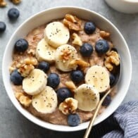

5-Minute Healthy Oatmeal Recipe

Description
You can make some ravishing oats with just five ingredients and easily
add other ingredients as you wish! The amount of prep time needed for this
recipe is nearly 5 minutes. The cook time roughly 5 minutes, giving you
a total of 10 minutes, perfect for a late night meal!
Nutrition Facts
- Calories: 238 kcal
- Carbohydrates: 43 g
- Protein: 7 g
- Fat: 6 g
- Fiber: 7 g
- Sugar: 9 g
A side note: this recipe is gluten-free.
Ingredients
This amount of ingredients will give you around 2 servings!
- 1 cup rolled oats
- 2 cup plain, unsweetened almond milk (though any kind of milk works
l
- 1 medium banana, mashed
- 1/2 teaspoon vanilla extract
- 1/2 teaspoon ground cinnamon
- pinch of salt
Instructions
- Combine all ingredients into a small saucepan and turn heat to medium/high.
- Bring to a boil. Then, turn the heat down to low/medium and continually stir
for around 3-5 minutes as the oatmeal cooks and thickens.
- Once oatmeal is at the desired consistency, remove from heat, and
serve immediately.